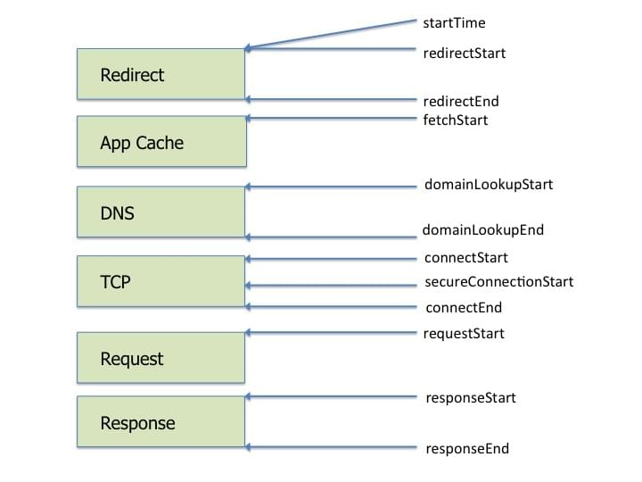

{{DefaultAPISidebar(“Resource Timing API”)}}
The Resource Timing API provides a way to retrieve and analyze detailed network timing data regarding the loading of an application’s resource(s). An application can use the timing metrics to determine, for example, the length of time it takes to fetch a specific resource such as an {{domxref(“XMLHttpRequest”)}}, {{SVGElement(“SVG”,“SVG element”)}}, image, script, etc.).
The interface’s properties create a resource loading timeline with {{domxref(“DOMHighResTimeStamp”,“high-resolution timestamps”)}} for network events such as redirect start and end times, fetch start, DNS lookup start and end times, response start and end times, etc. The interface also includes other properties that provide data about the size of the fetched resource as well as the type of resource that initiated the fetch.
This document shows the use of Resource Timing interfaces. For more details about the interfaces, including examples, see each interface’s reference page and the references in the {{anch(“See also”)}} section.
A live version of the examples is available on Github, as is the source code. Pull requests and bug reports are welcome.
An application can get timestamps for the various phases of resource loading such as redirection, DNS lookup, and TCP connection setup. Those phases and their property names are illustrated in Figure 1.
 Figure 1. Resource timing properties
An application developer can use the property values to calculate the length of time a phase takes and that information can help diagnose performance issues.
The following example illustrates using the resource timing properties to calculate the amount of time the following phases take: redirection ({{domxref(“PerformanceResourceTiming.redirectStart”,“redirectStart”)}} and {{domxref(“PerformanceResourceTiming.redirectEnd”,“redirectEnd”)}} ), DNS lookup ({{domxref(“PerformanceResourceTiming.domainLookupStart”,“domainLookupStart”)}} and {{domxref(“PerformanceResourceTiming.domainLookupEnd”,“domainLookupEnd”)}}), TCP handshake ({{domxref(‘PerformanceResourceTiming.connectStart’,‘connectStart’)}} and {{domxref(‘PerformanceResourceTiming.connectEnd’,‘connectEnd’)}}), and response ({{domxref(‘PerformanceResourceTiming.responseStart’,‘responseStart’)}} and {{domxref(‘PerformanceResourceTiming.responseEnd’,‘responseEnd’)}}). This example also calculates the time from the start of the fetch and request start phases ({{domxref(“PerformanceResourceTiming.fetchStart”,“fetchStart”)}} and {{domxref(“PerformanceResourceTiming.requestStart”,“requestStart”)}}, respectively), until the response has ended ({{domxref(‘PerformanceResourceTiming.responseEnd’,‘responseEnd’)}}). This timing data provides a detailed profile of the resource loading phases and this data can be used to help identify performance bottlenecks.
function calculate_load_times() {
// Check performance support
if (performance === undefined) {
console.log("= Calculate Load Times: performance NOT supported");
return;
}
// Get a list of "resource" performance entries
var resources = performance.getEntriesByType("resource");
if (resources === undefined || resources.length <= 0) {
console.log("= Calculate Load Times: there are NO `resource` performance records");
return;
}
console.log("= Calculate Load Times");
for (var i=0; i < resources.length; i++) {
console.log("== Resource[" + i + "] - " + resources[i].name);
// Redirect time
var t = resources[i].redirectEnd - resources[i].redirectStart;
console.log("... Redirect time = " + t);
// DNS time
t = resources[i].domainLookupEnd - resources[i].domainLookupStart;
console.log("... DNS lookup time = " + t);
// TCP handshake time
t = resources[i].connectEnd - resources[i].connectStart;
console.log("... TCP time = " + t);
// Secure connection time
t = (resources[i].secureConnectionStart > 0) ? (resources[i].connectEnd - resources[i].secureConnectionStart) : "0";
console.log("... Secure connection time = " + t);
// Response time
t = resources[i].responseEnd - resources[i].responseStart;
console.log("... Response time = " + t);
// Fetch until response end
t = (resources[i].fetchStart > 0) ? (resources[i].responseEnd - resources[i].fetchStart) : "0";
console.log("... Fetch until response end time = " + t);
// Request start until response end
t = (resources[i].requestStart > 0) ? (resources[i].responseEnd - resources[i].requestStart) : "0";
console.log("... Request start until response end time = " + t);
// Start until response end
t = (resources[i].startTime > 0) ? (resources[i].responseEnd - resources[i].startTime) : "0";
console.log("... Start until response end time = " + t);
}
}The size of an application’s resources can affect an application’s performance so getting accurate data on resource size can be important (especially for non-hosted resources). The {{domxref(“PerformanceResourceTiming”)}} interface has three properties that can be used to obtain size data about a resource. The {{domxref(‘PerformanceResourceTiming.transferSize’,‘transferSize’)}} property returns the size (in octets) of the fetched resource including the response header fields plus the response payload body. The {{domxref(‘PerformanceResourceTiming.encodedBodySize’,‘encodedBodySize’)}} property returns the size (in octets) received from the fetch (HTTP or cache), of the payload body, before removing any applied content-codings. {{domxref(‘PerformanceResourceTiming.decodedBodySize’,‘decodedBodySize’)}} returns the size (in octets) received from the fetch (HTTP or cache) of the message body, after removing any applied content-codings.
The following example demonstrates using these three properties.
function display_size_data(){
// Check for support of the PerformanceResourceTiming.*size properties and print their values
// if supported.
if (performance === undefined) {
console.log("= Display Size Data: performance NOT supported");
return;
}
var list = performance.getEntriesByType("resource");
if (list === undefined) {
console.log("= Display Size Data: performance.getEntriesByType() is NOT supported");
return;
}
// For each "resource", display its *Size property values
console.log("= Display Size Data");
for (var i=0; i < list.length; i++) {
console.log("== Resource[" + i + "] - " + list[i].name);
if ("decodedBodySize" in list[i])
console.log("... decodedBodySize[" + i + "] = " + list[i].decodedBodySize);
else
console.log("... decodedBodySize[" + i + "] = NOT supported");
if ("encodedBodySize" in list[i])
console.log("... encodedBodySize[" + i + "] = " + list[i].encodedBodySize);
else
console.log("... encodedBodySize[" + i + "] = NOT supported");
if ("transferSize" in list[i])
console.log("... transferSize[" + i + "] = " + list[i].transferSize);
else
console.log("... transferSize[" + i + "] = NOT supported");
}
}Although the browser is required to support at least 150 resource timing performance entries in its resource timing buffer, some applications may use more resources than that limit. To help the developer manage the buffer size, Resource Timing defines two methods that extend the {{domxref(“Performance”)}} interface. The {{domxref(“Performance.clearResourceTimings”,“clearResourceTimings()”)}} method removes all “resource” type performance entries from the browser’s resource performance entry buffer. The {{domxref(“Performance.setResourceTimingBufferSize”,“setResourceTimingBufferSize()”)}} method sets the resource performance entry buffer size to the specified number of resource {{domxref(“PerformanceEntry”,“performance entries”)}}.
The following example demonstrates the usage of these two methods.
function clear_resource_timings() {
if (performance === undefined) {
console.log("= performance.clearResourceTimings(): performance NOT supported");
return;
}
// Check if Performance.clearResourceTiming() is supported
console.log ("= Print performance.clearResourceTimings()");
var supported = typeof performance.clearResourceTimings == "function";
if (supported) {
console.log("... Performance.clearResourceTimings() = supported");
performance.clearResourceTimings();
} else {
console.log("... Performance.clearResourceTiming() = NOT supported");
return;
}
// getEntries should now return zero
var p = performance.getEntriesByType("resource");
if (p.length == 0)
console.log("... Performance data buffer cleared");
else
console.log("... Performance data buffer NOT cleared (still have `" + p.length + "` items");
}
function set_resource_timing_buffer_size(n) {
if (performance === undefined) {
console.log("= performance.setResourceTimingBufferSize(): performance NOT supported");
return;
}
// Check if Performance.setResourceTimingBufferSize() is supported
console.log ("= performance.setResourceTimingBufferSize()");
var supported = typeof performance.setResourceTimingBufferSize == "function";
if (supported) {
console.log("... Performance.setResourceTimingBufferSize() = supported");
performance.setResourceTimingBufferSize(n);
} else {
console.log("... Performance.setResourceTimingBufferSize() = NOT supported");
}
}The {{domxref(“Performance”)}} interface has a {{domxref(“Performance.onresourcetimingbufferfull”,“onresourcetimingbufferfull”)}} event handler that gets called (with an {{domxref(“Event”)}} of type {{domxref(“Event.type”)}} of “{{event(”resourcetimingbufferfull“)}}”) when the browser’s resource performance entry buffer is full. The following code example sets a {{domxref(“Performance.onresourcetimingbufferfull”,“onresourcetimingbufferfull”)}} event callback in the init() function.
function buffer_full(event) {
console.log("WARNING: Resource Timing Buffer is FULL!");
set_resource_timing_buffer_size(200);
}
function init() {
// load some image to trigger "resource" fetch events
var image1 = new Image();
image1.src = "https://developer.mozilla.org/static/img/opengraph-logo.png";
var image2 = new Image();
image2.src = "http://mozorg.cdn.mozilla.net/media/img/firefox/firefox-256.e2c1fc556816.jpg"
// Set a callback if the resource buffer becomes filled
performance.onresourcetimingbufferfull = buffer_full;
}When {{Glossary(“CORS”)}} is in effect, many of the timing properties’ values are returned as zero unless the server’s access policy permits these values to be shared. This requires the server providing the resource to send the {{httpheader(“Timing-Allow-Origin”)}} HTTP response header with a value specifying the origin or origins which are allowed to get the restricted timestamp values.
Note: The properties which are returned as 0 by default when loading a resource from a domain other than the one of the web page itself:
redirectStart,redirectEnd,domainLookupStart,domainLookupEnd,connectStart,connectEnd,secureConnectionStart,requestStart, andresponseStart.